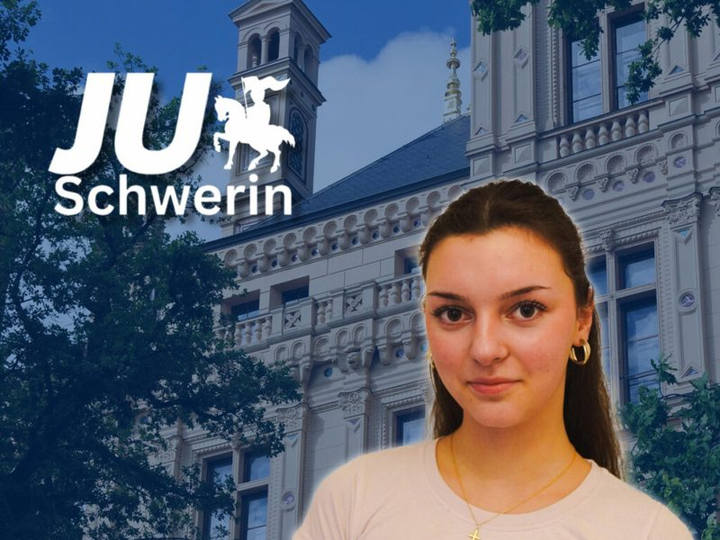

Jan Reißig
Vorsitzender der JU Schwerin
Vereinigung der CDU Schwerin
Die Junge Union Schwerin ist Teil der Jungen Union Deutschlands und damit der größten politischen Jugendorganisation Europas. Als eigenständige Vereinigung und zugleich starke Stimme innerhalb der Christlich Demokratischen Union Deutschlands bringt sie junge Perspektiven aktiv in politische Entscheidungsprozesse ein.
Die JU Schwerin versteht sich als starke Stimme der jungen Generation und als inhaltlicher Motor der CDU vor Ort. In regelmäßigen gemeinsamen Antragswerkstätten werden Ideen entwickelt, Positionen geschärft und politische Initiativen vorbereitet. Hier wird diskutiert, argumentiert und gefeilt, damit aus Überzeugungen konkrete Politik entsteht.
Politisches Engagement bedeutet für uns:
Neben der inhaltlichen Arbeit steht auch die Gemeinschaft im Mittelpunkt. Die Junge Union Schwerin verbindet politische Diskussion mit einer guten gemeinsamen Zeit.
Am letzten Freitag des Monats findet immer eine gemeinsame Aktion statt.
Ob Stammtisch, Fahrradtour oder Rhetorikseminar – die JU Schwerin ist aktiv und fördert den Austausch untereinander.
Darüber hinaus besuchen wir gemeinsam Feste in Schwerin oder lassen den Abend bei einem Kaltgetränk entspannt ausklingen. Politik lebt vom Teamgeist und von persönlichen Begegnungen.
Lerne die Mitglieder unseres Kreisvorstandes kennen und erfahre mehr über die Menschen, die die JU Schwerin vor Ort gestalten.
Vorsitzender der JU Schwerin
Stellvertretender Vorsitzender
Schatzmeisterin
Beisitzer im Kreisvorstand
Beisitzer im Kreisvorstand

Beisitzerin im Kreisvorstand
Beisitzerin im Kreisvorstand
Beisitzerin im Kreisvorstand
Beisitzer im Kreisvorstand
Du möchtest dich engagieren, Verantwortung übernehmen und deine Stadt aktiv mitgestalten? Dann werde Teil der Jungen Union Schwerin. Schreib uns, schau dir an, was wir gerade machen, oder füll gleich den Mitgliedsantrag aus.
Vorsitzender: Jan Reißig
Wismarsche Straße 173Die Telefonnummer ist die der Geschäftsstelle der CDU Schwerin.